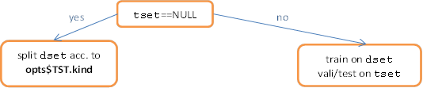
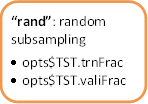
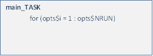
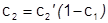
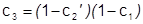

Wolfgang Konen, Patrick Koch
Cologne University of Applied Sciences
Last update: June 2014
Contents
Level 2: Tuned Data Mining in R (TDMR)
Level 3: “The Big Loop”: Several TDMs with Unbiased Evaluations
TDMR Data Reading and Data Split in Train / Validation / Test Data
Training / Validation / Test Set
TDMR parallel computing concept
Environment envT for parallel mode
Lesson 0: A simple TDMR program (LINK)
Lesson 1: DM on task SONAR (LINK)
Lesson 2: SPOT tuning on task SONAR (LINK)
Lesson 3: “The Big Loop” on task SONAR (LINK)
Lesson 4: Regression Big Loop” (LINK)
Lesson 5: Interactive Visualization (LINK)
Lesson 6: Performance Measure Plots (LINK)
Lesson 7: Tuner CMA-ES (rCMA) (LINK)
Lesson 8: Parallel TDMR (LINK)
Frequently Asked Questions (FAQ) (LINK)
Variable-length vectors in TDMR classification
Developer Details for the Lessons
How to integrate new machine learning algorithms
Details on TDMR parallel computing concept
How to add a new tuning variable
1. Using TDMR
Overview
The TDMR framework is written in R with the aim to facilitate the training, tuning and evaluation of data mining (DM) models. It puts special emphasis on tuning these data mining models as well as simultaneously tuning certain preprocessing options. TDMR is especially designed to work with SPOT [Bart10e] as the preferred tuner, but it offers also the possibility to use other tuners, e.g., CMA-ES [Hans06], LHD [McKay79] or direct-search optimizers [BFGS, Powell] for comparison.
This document (TDMR-docu.html)
· gives a short overview over the TDMR framework,
· explains some of the underlying concepts and
· gives more details for the developer.
This document should be read in conjunction with the companion document TDMR-tutorial.html, which shows example usages of TDMR in the form of lessons.
Both documents concentrate more on the software usage aspects of the TDMR package. For a more scientific discussion of the underlying ideas and the results obtained, the reader is referred to [Kone10a, Kone11b].
Both documents are available as CIOP Reports (PDF) under references [Kone12a] and [Kone12b].
Installing TDMR
Once you have R (http://cran.r-project.org/), > 2.14, up and running, simply install TDMR with
|
> install.packages("TDMR"); > library(TDMR); |
TDMR Workflow
TDMR can be utilized at different levels.
Level 1: DM without Tuning
Two kinds of DM tasks, classification or regression, can be handled.
For each DM task TASK, create one task-specific function, as short as possible:
If called without any parameter, main_TASK() should set default parameters for opts via tdmOptsDefaultsSet(), followed by task specific settings.
If is.null(dset), then main_TASK() reads in the task data, otherwise it takes dset. It does, if necessary, the task-specific preprocessing and then calls with the preprocessed data dset the task-independent functions tdmClassifyLoop or tdmRegressLoop, which in turn call the task-independent functions tdmClassify or tdmRegress.
The optional third argument tset and the options for splitting the task data in training and validation data are further described in Sec. "Training / Validation / Test Set"
A template for main_TASK may be
copied from inst/demo02sonar/main_sonar.r. [Here and in the following inst/ refers to the directory where the package TDMR is
installed. Use .find.package(“TDMR”) to locate this
directory.] The template is invoked with
|
result <- main_sonar(); |
See TDMR-tutorial, Lesson 1, for a complete example.
See Table 3 for an overview of elements in list result.
Level 2: Tuned Data Mining in R (TDMR)
A TDMR task consists of a DM task (Level 1) plus a tuner configuration (decision which parameters to tune within which ROI, which meta parameters to set for the tuner, …).
It is recommended to create for each DM task TASK a separate subdir. In this subdir the files shown in Table 1 have to be created for each tuner configuration (each TDMR task). In the case of SPOT as a tuner, this may look like:
Table 1: Configuration files for a SPOT run
|
.apd |
problem design: all opts-settings |
|
.roi |
SPOT ROI file, specifies which parameters to tune in which ROI |
|
.conf |
SPOT configuration file, usually with alg.func = "tdmStartSpot". Furthermore, io.apdFileName and io.roiFileName should specify the two files above. |
Templates for these three files may be copied from inst/demo02sonar/sonar_01.*.
The whole SPOT tuning can be started with demo/demo02sonar.r:
|
demo(demo02sonar,ask=F); |
This script defines a main_TASK in tdm$mainFunc, reads the .apd file and calls SPOT. SPOT reads the .conf file, calls the generic function tdmStartSpot(spotConfig), which finally executes tdm$mainFunc.
The only requirement on tdm$mainFunc is that it returns in
result$y
a suitable quantity to be minimized by SPOT.
If spot.fileMode==T, SPOT will generate .des and .aroi files (needed by SPOT internally) and the output files .bst and .res.
If spot.fileMode==F, tdmStartSpot will read the design from spotConfig$alg.currentDesign and it writes the .res data frame onto spotConfig$alg.currentResult.
See TDMR-tutorial, Lesson 2, for a complete example.
See Sec. "Details for Lesson 2" in TDMR-docu for more details
Level 3: “The Big Loop”: Several TDMs with Unbiased Evaluations
“The Big Loop” is a script to start several Level-2-TDMR tasks (usually on the same DM task), optionally with several tuners (see here for a list of tuners) and compare their best solutions with different modes of unbiased evaluations, e.g. on unseen test data (tdm$umode = ”TST”) or by starting a new, independent CV (tdm$umode = “CV”) or by starting a new, independent re-sampling (tdm$umode = “RSUB”).
To start the Big Loop, only one script file has to be created in the user directory. A template may be copied from demo/demo03sonarr.
It is invoked with
|
demo(demo03sonar,ask=F); |
This will specify in runList the list of TDMR tasks and a list of tuners. For each TDMR task and each tuner
(a) the tuning process is started (if spotStep=”auto”) or a previous tuning result is read in from file (if spotStep=”rep”) and
(b) one or more unbiased evaluations are started. This is to see whether the result quality is reproducible on independently trained models and / or on independent test data.
The result is a data frame theFinals with one row for each TDMR task / each tuner and several columns measuring the success of the best tuning solution in different unbiased evaluations, see Table 2. The data frame theFinals is written to tdm$finalFile.
More detailed results are returned in the environment envT.
See TDMR-tutorial, Lesson 3, for a complete example.
See "Details for Lesson 3" for more details
See Sec. "Environment envT" for more details on envT.
TDMR Experiment Concept
TDMR Level 3 (“The Big Loop”) allows
(a) to conduct experiments, where different .conf files, different tuners, different unbiased evaluations, … are tried on the same task;
(b) to repeat certain experiments of kind (a) multiple times with different seeds (tdm$nExperim>1).
Each TDMR experiment consists of three parts:
Model building:
· During model building (training) and tuning the user starts with a data set, which is partitioned into training and validation set.
· The relative gain achieved on the validation set acts as performance measure for the tuning process.
· In the case of opts$TST.kind=“cv” or in the case opts$NRUN>1 multiple models are build, each with its own training and validation set. In this case multiple relative gains are averaged to get the performance measure for the tuning process.
Tuning:
· The above model building process is started several times with different model parameters and preprocessing parameters (design points). The tuning process uses the performance measure returned to guide the search for better parameters.
· As a result of the tuning process, a best parameter set is established. It has a certain performance measure attached to it, but this measure might be too optimistic (e.g. due to validation data being used as training data in a prior tuning step or due to extensive search for good solutions in a noisy environment)
Unbiased Evaluation (Test):
· Once a best parameter set is established, an unbiased performance evaluation is recommended.
· This evaluation is done by calling unbiasedRun() with one value for parameter tdm$umode (a scalar string). The possible choices for tdm$umode are explained in Sec. "Training / Validation / Test Set".
· If tdm$nrun>1, multiple calls to unbiasedRun() are issued. The performance measure returned is the average over all runs.
Table 2: Elements of data frame finals
|
Description |
Condition |
|
|
|
||
|
CONF |
the base name of the .conf file |
|
|
TUNER |
the value of tdm$tuneMethod |
|
|
{PARAMS} |
all tuned parameters appearing in .roi file |
if tdm$withParams==T |
|
NEVAL |
tuning budget, i.e. # of model evaluations during tuning (rows in data frame res) |
|
|
RGain.bst |
best solution (RGain) obtained from tuning |
|
|
RGain.avg |
average RGain during tuning (mean of res$Y) |
|
|
|
||
|
NRUN |
# of runs with different test & train samples in unbiasedBestRun_*.r or # of unbiased CV-runs. Usually NRUN = tdm$nrun, see fct tdmMapOpts in tdmMapDesign.r. |
|
|
RGain.OOB |
mean OOB training error (averaged over all unbiased runs) |
if opts$method = *.RF |
|
sdR.OOB |
std. dev. of RGain.OOB |
if opts$method = *.RF |
|
RGain.TRN |
mean training error (averaged over all unbiased runs) |
if opts$method ¹ *.RF |
|
sdR.TRN |
std. dev. of RGain.TRN |
if opts$method ¹ *.RF |
|
RGain.RSUB |
mean test RGain (test set = random subsample) |
if tdm$umode has “RSUB” |
|
sdR.RSUB |
std. dev. of RGain.RSUB (averaged over all unbiased runs) |
if tdm$umode has “RSUB” |
|
RGain.TST |
mean test RGain (test set = separate data, user-provided) |
if tdm$umode has “TST” |
|
sdR.TST |
std. dev. of RGain.TST (averaged over all unbiased runs) |
if tdm$umode has “TST” |
|
RGain.CV |
mean test RGain (test set = CV, cross validation with tdm$nfold CV-folds |
if tdm$umode has “CV” |
|
sdR.CV |
std. dev. of RGain.CV (averaged over all unbiased runs) |
if tdm$umode has “CV” |
More details:
· Each experiment of kind (a) initially deletes file tdm$finalFile, if it exists, and then writes for each combination {.conf file, tuner} it encounters a line to tdm$finalFile (usually a file with suffix .fin). This line is a one-row data frame finals which is built in unbiasedBestRun_C.r (classification) and contains the columns listed in Table 2.
· In the case of regression experiments (unbiasedBestRun_R.r) each “RGain” has to be replaced by “RMAE” in the table above, see here for further explanation.
· If tdm$experFile is not NULL, then the same one-row data frame finals is also appended to the file tdm$experFile. Usually, tdm$experFile is a file with .exp as suffix. This file is never deleted by the TDMR system, only the user may delete it. tdm$experFile serves the purpose to accumulate experiments carried out multiple times (with different random seeds). This multiple-experiment execution may be done either directly, within one ‘big-loop’ experiment, if tdm$nExperim>1, or it may be done subsequently by the user when starting demo03sonar.r again at a later point in time with the same tdm$experFile defined.
· An .exp file can be analyzed with scripts like exp_summ.r in TDM.SPOT.d/appAcid/.
TDMR Data Reading and Data Split in Train / Validation / Test Data
Data Reading
TDMR reads the task data from
opts$filename.
Optionally, if opts$READ.TST=TRUE, data are also read from opts$filetest.
Data are read prior to tuning into the object dataObj at the beginning of bigLoopStep in tdmBigLoop.r[1]
dataObj <- tdmSplitTestData (sC$opts,tdm,nExp);
where tdmSplitTestData lets the function tdmReadData do the read work (using the options opts$READ.CMD, opts$READ.TST, opts$READ.TXT and opts$READ.NROW).
If opts$READ.CMD is not defined, its default is:
read.csv(file=paste(opts$dir.txt,
filename, sep=""), nrow=opts$READ.NROW)
which includes the defaults
header=TRUE, sep=",", dec="." for the read.csv
command.
Now dataObj is passed on to tdmDispatchTuner and unbiasedRun , where the training-validation data and the test data are extracted with
dset <- dsetTrnVa(dataObj);
tset <- dsetTest(dataObj);
and passed on to main_TASK(…, dset=dset,tset=tset).
Training / Validation / Test Set
Principles
In data mining we know three kind of data or data sets:
1. Training set: the data for learning or model training.
2. Validation set: the data used to obtain a performance measure of the trained model. The performance on the validation data is used to guide the tuning process.
3. Test set: When training and tuning is finished, we build a final model. To estimate the quality of the model for new data, we test its performance on test data. Usually, the test data were neither seen by the model builder nor by the tuner. The user should NOT use the performance on the test data in any way to tune the model further.
Usually, the split into test set on the one side and training/validation set on the other side is done once prior to the tuning process. During tuning, many tuning steps are possible, each containing at least one model training and each step may have a new separation of the training/validation set into a training part and a validation part.
Test set splitting
How can we split the data into test set on one side and training/validation set (which we will abbreviate with TrnVaSet in the following) on the other side?
TDMR offers four options here [the value in brackets denotes the choice for tdm$umode]:
1.
TDMR sets a random fraction of the data aside
for testing [”SP_T”]. This is done once before the tuning
starts. The test set (the data set aside for testing) is used only in the
unbiased evaluation. The whole procedure can be repeated (if tdm$nExperim>1)
and another random test set is set aside.
This is the recommended option, it has a completely independent test set
and allows to assess the variability due to varying test set selection.
To use this option, set tdm$umode=”SP_T”
and tdm$TST.testFrac to the desired random fraction to be set aside (default is 10%).
The splitting is coded in the column dset$tdmSplit with ‘0’ for all records
belonging to TrnVaSet and ‘1’ for test data.
Set tdm$SPLIT.SEED=<number> if you want reproducible splits (but varying for each experiment which has a different <number>).
2. TDMR makes CV with different test set folds [”SP_CV”]. TODO
3.
User-defined test set splitting [”TST”]. Here we allow two sub-options: (a) The user provides two data
files opts$filename and opts$filetest. TDMR reads both, adds a new column opts$TST.COL
to the data frames with ‘0’ for the data from opts$filename (train/validataion
data) and ‘1’ for the data from opts$ filetest (test data). Finally, both data
frames are bound together into one data frame dset. (b) The user provides one
data frame dset containing already a column opts$TST.COL with the appropriate
‘0’s and ‘1’s.
In either way, the splitting is coded in the column dset[,opts$TST.COL] with
‘0’ for all records belonging to TrnVaSet and ‘1’ for test data.
To use option (a), set tdm$umode=”TST” and opts$READ.TST=TRUE . Have opts$filetest and opts$TST.COL set to meaningful string
values.
To use option (b), set tdm$umode=”TST”
and opts$READ.TST=FALSE. The string opts$TST.COL has to name a column of the data frame
read which contains already the appropriate ‘0’s and ‘1’s.
4. Test set is part of TrnVaSet [”RSUB” or ”CV”]. (NOTE: This option is deprecated, since the test set is
already visible during training and tuning, which may lead to overfitting or
oversearching effects. But sometimes you may have only very few data and cannot
afford to set test data aside.)
The whole data is used for training/validation and later also as the reservoir
from which the test set sample is drawn.
To use this option, set tdm$umode=”RSUB”
or tdm$umode=”CV”. In case ”RSUB”
set tdm$TST.testFrac to the desired random fraction
to be drawn from the whole data (default is 20%). In case ”CV” set tdm$nfold
to the desired number of CV folds (default is 5).
With each of these choices for tdm$umode, the following happens during unbiased evaluation: A “fresh” model is build using all data in TrnVaSet for training. Then this model is evaluated on the test data and the performance (relative gain) on these test data is an unbiased estimator of the model’s performance on new data.
main_TASK and its training/validation/test logic
The signature of function main_TASK is
It is usually called in three cases
1. by the user (solo ML task or user-defined tuning procedure)
2. from TDMR during tuning[2]
3. from TDMR during unbiased evaluation[3]
In case 2 the syntax is main_TASK(opts,dset), where dset = dsetTrnVa(dataObj) .
In case 3 the syntax is main_TASK(opts,dset,tset), where dset = dsetTrnVa(dataObj) and in addition tset= dsetTest(dataObj).[4]
How does main_TASK split into training and validation data (during tuning) or into training and test data (during unbiased evaluation)?



If tset==NULL, then tdmClassifyLoop takes care of splitting dset into training and validation data: Three options are supported here, which are distinguished by the value of opts$TST.kind:
1. ”rand” = Random Subsampling: Sample a fraction opts$TST.valiFrac from dset (the train-validation-data) set it aside for validation. Use the rest for training, if opts$TST.trnFrac is NULL. If opts$TST.trnFrac is defined (and if it is ≤ 1-opts$TST.valiFrac, otherwise error), then use only a random fraction opts$TST.trnFrac of the non-validation data from dset for training.
2. ”cv” = Cross Validation: Split dset into opts$TST.nfold folds and use them for cross validation.
3. ”col” = User-Defined Column: All records with a ‘0’ in column opts$TST.COL are used for training, the rest for validation.
The split into training and validation data is done in tdmClassifyLoop, i.e. for each call of main_TASK.
Note that the fractions opts$TST.valiFrac and opts$TST.trnFrac are relative to the number of rows in dset. dset may be the TrnVaSet defined above or the complete dataset.
opts$TST.kind =“col” in combination with tdm$umode=”TST” above is normally NOT recommended (the same data are specified for test set and validation set). But it is o.k. in the special case of opts$MOD.method =”RF” or =“MC.RF” (Random Forest): Then the validation data are in fact never used, since RF uses its own validation measure with the OOB-error on the training data.
If tset != NULL, only opts$TST.kind==”rand” is allowed. Training data are taken from
dset, by choosing a random subsample (fraction opts$TST.trnFrac). If
opts$TST.trnFrac==NULL, set it to 1–opts$TST.valiFrac. Set opts$TST.valiFrac=0
and opts$TST.trnFrac=1, if you want to use all data from dset for
training.
Preferred Workflow Training / Validation / Test Data
1. opts$READ.INI==T. Then tdmSplitTestData[5] will read in the data from file and return a dataObj != NULL.
2. tdm$umode==”SP_T” or == “TST”
a. tdm$umode==”SP_T”. The data are split into tdm$TST.testFrac test data and the rest is train/vali data.[6]
b. tdm$umode==”TST”. The data are split acc. to column opts$TST.COL as specified by the user. This column tags the records with 1=test, 0=train/vali.
3. Then tdmStartSpot will pass dsetTrnVa(dataObj) to the tuning step à start mainFunc with arguments dset=dsetTrnVa(dataObj) and tset=NULL (or omit tset)
4.
Unbiased run: Do in a loop 1:tdm$nrun:
Start mainFunc with arguments dset=dsetTrnVa(dataObj) and
tset=dsetTest(dataObj), i.e.
a. Start unbiased training with the train/vali data from dsetTrnVa(dataObj). The setting opts$TST.kind==”rand” is required. Here, opts$TST.trnFrac controls, how many percent of TrnVaSet are used for training. Recommended choice: opts$TST.trnFrac=1, opts$TST.valiFrac=0.
b. For each trained model, use test data from tset=dsetTest(dataObj) to measure the unbiased quality.
The individual results from the loop 1:tdm$nrun are merged (mean RGain.<umode> and standard deviation sdR.<umode> where <umode> is one out of {RSUB,CV,TST,SP_T})
Examples
|
opts$READ.INI=TRUE |
Read the data prior to tuning, with train-set from dmc2010_train.txt, test set from dmc2010_test.txt. This is coded with ‘0’ and ‘1’ in column TST of the data frame dset . With opts$TST.kind=”col” we specify that all TST==0 data are used for training. The model RF (Random Forest) needs no validation data, since the performance measure is “OOB on the training set”. |
|
opts$READ.INI=TRUE opts$TST.nfold=5 |
Read the data prior to tuning from sonar.txt, split them by random subsampling: 15% into test set and 85% into train+validation set. This is coded with ‘0’ and ‘1’ in column “tdmSplit” of data frame dset . During tuning, the train+validation set is further split by cross validation with 5 folds (new split in each tuning step). The unbiased run uses all 85% train+validation data for training and reports the performance on the 15% test set data. |
Details:
· opts$TST.kind=”rand” triggers random resampling for the division of dset into training and test set. In the case of classification this resampling is done by stratified sampling: each level of the response variable appears in the training set in proportion to its relative frequency in dset, but at least with one record. This last condition is important to ensure proper functioning also in the case of ‘rare’ levels (most DM models will crash if a certain level does never appear in the training set). In the case of regression the sample is drawn randomly (without stratification).
TDMR Important Variables
Table 3: Overview of important variables
in TDMR
|
list with DM settings (used by main_TASK and its subfunctions). Parameter groups: · opts$READ.* # reading the data · opts$TST.* # training / validation / test set and resampling · opts$PRE.* # preprocessing · opts$SRF.* # sorted random forest (or similar other variable rankings) · opts$MOD.* # genera model issues · opts$CLS.* # classification issues · opts$RF.* # Random Forest · opts$SVM.* # Support Vector Machine · opts$GD.* # graphic device issues See Appendix B for a complete list of all elements in opts. (Or the “Value” section of tdmOptsDefaultsSet in TDMR-manual.pdf or ?tdmOptsDefaultsSet) |
|
|
preprocessed data set (used by main_TASK and its subfunctions) |
|
|
result |
list with
results from Level 1: · lastRes # last run, last fold: list of class tdmRegr from tdmRegress · R_train # RMAE on training set (vector of length NRUN) · S_train # RMSE on training set (vector of length NRUN) · T_train # Theil's U for RMAE on training set (vector of length NRUN) · *_test # --- similar, with validation set instead of training set · y # the quantity to be minized by the tuner, usually mean(R_test) · sd.y # standard deviation of y over the opts$NRUN runs In the case of classification, an object of class TDMclassifier (see tdmClassifyLoop) with: · lastRes # last run, last fold: list of class tdmClass from tdmClassify · C_train # classification error on training set (vector of length NRUN) · G_train # gain on training set (vector of length NRUN) · R_train relative gain (% of max. gain) on training set (vector of length NRUN) · *_test # --- similar, with validation set instead of training set · *_test2 # --- similar, with test2 set instead of training set · y # what to be minized by SPOT, usually mean(-R_test) · sd.y # standard deviation of y over the opts$NRUN runs |
|
lastRes |
list with results from
tdmClassify/tdmRegress: · opts # with some settings perhaps adjusted · d_train # training set + predicted class column(s) · d_test # test set + predicted class column(s) · d_dis # disregard set + predicted class column(s) · sumEVAL # list of evaluation measures, summed over all response variables · allEVAL # data frame with evaluation measures, one row for each target · lastCm* # confusion matrix for * = train or test · lastModel # the trained model (for last response variable) · lastPred # name of prediction column ·
lastProbs # a list with three probability matrices (row: records, col:
classes) In the case of regression, an object of class tdmRegre (see tdmRegress) with: · opts # with some settings perhaps adjusted · d_train # training set + predicted regression column(s) · d_test # test set + predicted regression column(s) · rmse # root mean square error, summed over all response.variables · rmae # relative mean absolute error, summed over all response.variables · allRMAE # RMAE for each response.variable · lastModel # the trained model (for last response variable) |
|
list with settings for Level 2 and 3. Elements are · mainFile (with path relative to current dir) · mainFunc (string, e.g. "main_sonar") · unbiasedFunc (string, e.g. "unbiasedBestRun_C") · umode: unbiased evaluation mode, one out of {“TST”,”RSUB”,”CV”,”SP_T”}, see tdmMapDesign.r, tdmBigLoop.r · finalFile, (string, e.g. "sonar.fin") · withParams: T/F, has theFinals columns with best parameters? · map,mapUser: internal use, see TDMR Design Mapping Concept · … See ?tdmDefaultsFill for a complete list of all elements in tdm. |
|
|
finals |
see Table 2 |
|
envT |
environment, see Table 4 |
lastRes: The items last* are specific for the *last* model (the one built for the last response variable in the last run and the last fold).
The accessor function Opts(envT$result) returns the element envT$result$lastRes.
Variable opts
opts is a long list with many parameters which control the behavior of main_TASK, i.e. the behaviour of Level 1. To give this long list a better structure, the parameters are grouped with key words after “opts$” and before “.” (see Table 3 above).
There are some other parameters in opts which do not fall in any of the above groups, e.g.
· opts$NRUN
· opts$VERBOSE
and others.
You might either specify all opts-parameters in your application (i.e. main_TASK.r or *.apd) or you might use tdmOptsDefaultsSet() and specify only those of the opts-parameters which differ from this defaults or you enter main_TASK.r with a partially filled opts and leave the rest to function tdmFillOptsDefaults (in tdmOptsDefaults.r), which is called from main_TASK after the user’s opts-settings (because some settings might depend on these settings of the user).
Details:
·
For ‘type safety’, every object opts should be
created as
opts = tdmOptsDefaultsSet()
and not with opts = list().
· If the list opts is extended by element X in the future, you need only to add a default specification of opts$X in function tdmOptsDefaultsSet, and all functions called from main_TASK will inherit this default behaviour.
· tdmOptsDefaultsSet calls finally the internal function tdmOptsDefaultsFill(opts) , and this fills in further defaults derived from actual settings of opts (e.g. opts$LOGFILE is an element which is derived from opts$filename as <opts$filename>.log).
TDMR RGain Concept
For classification: The R_-elements (i.e. result$R_train and result$R_test) can contain different performance measures, depending on the value of opts$rgain.type:
- “rgain” or NULL [def.]: the relative gain in percent, i.e. the total gain actually achieved divided by the maximal achievable gain on the given data set,
- “meanCA”: mean class accuracy: For each class the accuracy (1 – error rate) on the data set is calculated and the mean over all classes is returned,
- “minCA”: same as “meanCA”, but with min instead of mean. For a two-class problem this is equivalent to maximizing the min(Specifity,Sensitivity) (see here).
The total gain is defined as the sum of the pointwise product gainmat*confmat. Here confmat is the confusion matrix (actual vs. predicted cases) and gainmat is the gain associated with each possible outcome.[7]
For binary classification there are additional options for opts$rgain.type, based on package ROCR [Sing05]:
- "arROC": area under ROC curve (a number in [0,1]),
- "arLIFT": area between lift curve and horizontal line 1.0,
- "arPRE": area under precision-recall curve (a number in [0,1]).
In each classification case, TDMR seeks to minimize “–result$R_train”, i.e. to maximize result$R_train.
For regression: The R_‐elements (i.e. result$R_train and result$R_test) can contain different things, depending on the value of opts$rgain.type:
-
“rmae” or NULL [def.]: the relative mean
absolute error
where yi is the true value and pi the predicted value
-
“rmse”: root mean square error
-
“made”: mean absolute deviation
The default, if is.null(opts$rgain.type),
is “rmae”.
In each regression case, TDMR seeks to minimize result$R_train.
Environment envT
The environment envT is used for several purposes in TDMR
· to report results from a call to tdmBigLoop (Level 3) back to the user
· to communicate information between different parts of TDMR
· to pass necessary information to and back from the parallel slaves, see Section Environment envT for parallel mode
Environment envT is constructed in tdmEnvTMakeNew, with some elements filled in later by other functions. Table 4 shows the elements of envT and it shows in the 3rd column which function adds these elements to envT:
Table 4: Elements of environment envT
|
variable |
remark |
function |
|
bst |
data frame with contents of last .bst file |
tdmStartOther or spotTuner, lhdTuner |
|
bstGrid |
list with all bst data frames, bstGrid[[k]] retrieves the kth data frame |
tdmBigLoop or populateEnvT |
|
getBst(conf,tuner,n) |
function returning from bstGrid the bst data frame for configuration file conf, tuning method tuner and experiment n |
tdmBigLoop |
|
res |
data frame with contents of last .res file |
tdmStart* or tdmBigLoop |
|
resGrid |
list with all res data frames, resGrid[[k]] retrieves the kth data frame |
tdmBigLoop or populateEnvT |
|
getRes(conf,tuner,n) |
function returning from resGrid the res data frame for configuration file conf, tuning method tuner and experiment n |
tdmBigLoop |
|
result |
list with results of tdm$mainFunc as called in the last unbiased evaluation, see Table 3 |
unbiasedRun |
|
theFinals |
data frame with one row for each res file, see Table 2 |
tdmBigLoop or populateEnvT |
|
tdm |
see Table 3 |
tdmBigLoop |
|
tunerVal |
the value of tdmDispatchTuner (which can be a long list in case of SPOT) |
tdmDispatchTuner |
|
spotConfig |
|
tdmBigLoop |
|
sCList |
list with all spotConfig’s, sCList[[k]] holds the spotConfig for the kth run |
tdmEnvTMakeNew, tdmEnvTReadApd |
|
runList |
runList |
tdmBigLoop |
envT is used to pass information back and forth between different functions of TDMR, where envT$ sCList[[k]]$opts and envT$tdm pass info into tdmStart*, while envT$res and envT$bst are used to pass info back from tdmStart* to the main level.
Note that the variable opts with various settings for the DM process is returned in several variables of envT:
· envT$result$opts, envT$result$lastRes$opts, envT$tunerVal$opts, envT$spotConfig$opts and envT$sCList[[k]]$opts.
TDMR parallel computing concept
How to use parallel computing
TDMR supports parallel computing through the packages snow and package parallel.[8] Parallelization of TDMR’s level-3-tasks is very easy, you simply have to set tdm$parallelCPUs to a suitable value >1. This will invoke the parSapply-mechanism of parallel.
Note that a certain parSapply will try to spawn always tdm$parallelCPUs processes, but if the last process(es) are less than this number, parSapply will wait for the slowest to complete before the next parSapply takes over. So it is a good idea to bundle as many processes as possible into one parSapply, if you want an even load distribution over time.
But on the other hand, it has also advantages to send several tdmBigLoop’s because every such call will have its own envT, which is saved on its own .RData at the end of function tdmBigLoop and so the intermediate results are preserved, even if the parallel cluster should crash.
Environment envT for parallel mode
The environment envT is used to pass necessary information to and back from the parallel slaves. It replaces in nearly all cases the need for file reading or file writing. (File writing is however still possible for the sequential case or for parallel slaves supporting file access. File writing might be beneficial to trace the progress of parallel or sequential tuning processes while they are running and to log the resulting informations.)
See Environment envT and Table 4 for more information on envT .
Example Usage
The usage of the TDMR workflow is fairly easy. We show several example lessons in the accompanying document TDMR-tutorial.
Lesson 0: A simple TDMR program (LINK)
Lesson 1: DM on task SONAR (LINK)
Lesson 2: SPOT tuning on task SONAR (LINK)
See Sec. "Details for Lesson 2 Example" for more details
Lesson 3: “The Big Loop” on task SONAR (LINK)
See Sec. "Details for Lesson 3 Example" for more details
Lesson 4: Regression Big Loop” (LINK)
Lesson 5: Interactive Visualization (LINK)
Lesson 6: Performance Measure Plots (LINK)
Lesson 7: Tuner CMA-ES (rCMA) (LINK)
Lesson 8: Parallel TDMR (LINK)
Frequently Asked Questions (FAQ) (LINK)
Variable-length vectors in TDMR classification
When running TDMR for classification, some possible tuning parameters need special treatment. These are (in the case of RF or similar learning algorithms):
· sampsize
· cutoff
· classwt
We explain the details in the following.
sampsize
The parameter sampsize in a call to randomForest can be either
a) a scalar, then it is the total sample size
b) a vector of length n.class = “number of levels in response.variable”, then it is the size of each strata (number of samples with that class level), so the sum of this vector is the overall sample size.
TDMR allows to tune the sampsize variables in either case a) or b) up to a limit of n.class=5. A ROI file can contain lines with SAMPSIZE1, SAMPSIZE2, SAMPSIZE3, SAMPSIZE5, SAMPSIZE5 which are mapped to opts$RF.samp[i], i=1,...,5.
a) If only SAMPSIZE1 is present in ROI file, then opts$RF.samp is a scalar, which is case a) above
b) If more lines SAMPSIZE1, …, SAMPSIZEn (n=n.class) appear in ROI file, we have case b) above
In more detail:
For classification:
· SAMPSIZEi in ROI will be mapped to opts$RF.samp[i]. If the user wants to tune just a scalar sampize, she defines only SAMPSIZE1 in ROI file.
· After mapping, opts$RF.samp has to be a scalar or a vector of length n.class. That is, the APD file is responsible for setting all opts$RF.samp[i] that do not appear in ROI file (because they shall not be tuned).
·
Prior to training the model on data to.model, a
call tdmModAdjustSampsizeC will check all this and will throw errors, if not
fulfilled. In addition,
tdmModAdjustSampsizeC(opts$RF.samp,…)
will compare opts$RF.samp[i] with the number of records for each class level
in the training set to.model and clip it, if necessary. The result is a vector
opts$RF.sampsize, which is guaranteed to work in train.rf for a call
randomForest(… , sampsize, …).
·
If importance check is enables (SRF), then a
similar call tdmModAdjustSampsizeC(opts$SRF.samp, …)
will be done before importance check RF-build. Currently, opts$SRF.samp will be
only a scalar (if not set otherwise in APD file). It is not (yet) in the set of
tunable parameters.
For regression:
· very much the same, only tdmModAdjustSampsizeC is replaced by tdmModAdjustSampsizeR;
· this takes care of the fact, that for regression the sampsize can only be a scalar (or NULL).
cutoff
The parameter cutoff in a call to randomForest (for classification only) can be either
a)
not present, then cutoff[i] = 1/n.class is the
default,
where n.class = “number of levels in response.variable”
b) a vector of length n.class, whose sum has to be exactly 1.
TDMR allows to tune the cutoff variables in b) up to a limit of n=n.class=5. A ROI file can contain lines with CUTOFF1, CUTOFF2, CUTOFF3, CUTOFF5, CUTOFF5 which are mapped to opts$CLS.cutoff[i], i=1,...,5.
It is a bit tricky to ensure for ci = CUTOFFi the constraint . This is because a tuning of any CUTOFFi tells the tuner to select a random value from [lower,upper] as specified in ROI file, independent of the other CUTOFFk. Therefore a design point will almost always violate the sum constraint. Even if we map the violating design points to legal ones, the problem remains that many different design points are mapped to the same configuration.
How to cure? – The
short story is: It is not wise to tune all ci , i = 1,…,n. Instead:
Set one ci = -1 in APD file, specify positive values for the
n.class–1 other ci either in ROI or in APD file. This reduces the
tuning complexity because at most n.class–1 cutoffs need to be tuned. Example:
opts$CLS.cutoff = c(0.1, -1, 0.5).
Then TDMR (with function tdmModAdjustCutoff) will take care to set the negative
cutoff to “1 – sum of the others”, i.e. c2 = 1 – 0.6 = 0.4 in the
example above.
In more detail:
· opts$CLS.cutoff is the cutoff for model training. opts$SRF.cutoff is the cutoff for the randomForest used during importance check.
·
The APD file may or may not specify values for
opts$CLS.cutoff and opts$SRF.cutoff. E.g.
opts$CLS.cutoff=c(0.1, 0.1, -1)
signaling that opts$CLS.cutoff[3] gets the remainder to 1.
If it does not specify anything, the default
opts$CLS.cutoff=NULL and
opts$SRF.cutoff=opts$CLS.cutoff
is taken (function tdmOptsDefaultsSet). If any cutoff is NULL, there will be no
cutoff argument in the call to randomForest.
·
Now the design point according to the ROI file
is mapped, e.g. with
CUTOFF1 = 0.243
CUTOFF2 = 0.115
we get opts$CLS.cutoff=c(0.243, 0.115, -1)
· Now TDMR (with function tdmModAdjustCutoff) takes care to map both cutoff vectors to valid cutoff vectors (all ci>0, sum(ci)=1). It takes care of some special cases:
o If the cutoff vector has length n.class – 1, it adds a -1 at the end.
o If exactly one cutoff is negative, it is set to “1 – sum(other cutoffs)”. If more than one cutoff is negative, it throws an error.
o
If sum(other cutoffs) happens to be ³1, it scales all
those elements to sum 0.9.
Why 0.9? – Because then the left-over cutoff can get a positive value 0.1. A
warning “sum ³1” is issued. There is no problem if this warning occurs only for
some design points, it can happen sometimes for certain ROI regions. But if it
happens very often, the user may change the ROI, so that the left-over cutoff
is not always 0.1.
o It is a good idea to tune the smaller cutoffs and have the largest cutoff as left-over, in this case warnings will occur less often or never.
classwt
The parameter classwt in a call to randomForest (for classification only) can be either
a) not present, then all class levels get the same weight,
b) a vector of length n.class, where n.class = “number of levels in response.variable”.
TDMR allows to tune the classwt variables in b) up to a limit of n=n.class=5. A ROI file can contain lines with CLASSWT1, CLASSWT2, CLASSWT3, CLASSWT5, CLASSWT5 which are mapped to opts$CLS.CLASSWT[i], i=1,...,5.
Similar to, CLASSWTi tells the tuner to select a random value from [lower,upper] as specified in ROI file, independent of the other CLASSWTk. Similar to cutoff, only the relative weight to the other CLASSWTi is important. Therefore, it is not wise to tune all CLASSWTi , i = 1,…,n. Instead: Set one CLASSWTi in APD file, specify positive values for the n.class–1 other CLASSWTi either in ROI or in APD file. This reduces the tuning complexity because at most n.class–1 classwt variables need to be tuned.
2. TDMR for Developers
Developer Details for the Lessons
Details for Lesson 2
When spot(“sonar_01.conf”,”auto”) is invoked, the following things happen:
·
SPOT is started, reads from sonar_01.conf that
it has to call the inner function
alg.func
= "tdmStartSpot".
· tdmStartSpot(spotConfig) gets with the elements tdm and opts of spotConfig the required information
tdm$mainFile <- "main_sonar.r";
tdm$mainFunc <- "main_sonar";
changes to the directory of tdm$mainFile (current dir in the case of this example) and invokes the DM template main_sonar.r to with command result <- main_sonar(opts,dset=dset).
·
Now tdm$mainFunc is started and runs the data
mining process. The DM template main_sonar is provided by the user. The only
requirement of SPOT or other tuners for the function main_sonar is that it
returns in
result$y
a suitable quantity to be minimized by SPOT.
More details:
· For a new task TASK, the opts-part of .apd can usually be copied from the opts-part of main_TASK.
· Usually, TASK_02.apd, TASK_03.apd, … will start with source(TASK_01.apd,local=T) and will only specify those elements of opts which need to be different.
· For reproducability of experiments each TDMR task should get its own task name TASK_01, TASK_02, … and the associated set of files (.apd, .conf, .roi …) should kept unchanged for further reference. DO NOT alter later the settings in a TDMR task file (unless you want to delete and overwrite the old experiment), but create a new TASK_xx with its own set of files.
· If a new parameter appears in a .roi file which never appeared in any other .roi file before, a line has to be added to tdmMapDesign.csv, specifying the mapping of this parameter to the corresponding element of opts. (more details here)
·
For the current TDMR package version, SPOT is
loaded from the CRAN package version, which has been installed as library in
the usual way. This is the case when tdm$theSpotPath is either NA or NULL.
If you want to load SPOT from source files in pre-defined loacations (see source.tdm.R), set
tdm$theSpotPath <- “USE.SOURCE”;
If you want to load SPOT from your own source directory, set tdm$theSpotPath to
this directory.
· How does SPOT handle it, if confFile and spotConfig are both present, e.g. in a call spot(confFile,"auto",spotConfig):
- Initial defaults for all elements in spotConfig are set inside SPOT (see spotGetOptions.R).
- If confFile exists (only then!), it is read and settings found in confFile overwrite the defaults from spotGetOptions.R.
- If spot is called with parameter spotConfig present, then the elements found in this command line parameter overwrite the settings of step 2.
Details for Lesson 3
· At the beginning of demo03sonar.r we change to a directory where the .conf files in runList reside. The .conf files should be given w/o path (since TDMR will infer other files, e.g. sonar_01.apd, from it).
· spotList is a list of .conf files for which the tuners will be started (NULL for all from runList). If a tuner is not started for a certain .conf file it is assumed that its .bst file already exists from a prior run.
· spotStep is a single string which specifies the SPOT step to be invoked. If e.g. the step is “rep” (“report”), then it is assumed that the .bst file already exists.
Some more details for the developer:
· The unbiased evaluations are done for tdm$umode by calling the function unbiasedRun(…,tdm$umode,…). The function unbiasedRun reads in the best solution of a tuning run from .bst file, performs a re-run (training + test) with these best parameters.
· demo03sonar.r in the form given above assumes that library TDMR is loaded. If you want instead to ‘source’ all necessary R-files from tdm$tdmPath (e.g. during development) OR if you want to prepare for parallel execution (more details …), then add the following lines after the definition of tdm to demo03sonar.r:
|
tdm$theSpotPath <- NA; start.tdm.path <- ifelse(is.null(tdm$tdmPath), .find.package("TDMR"),paste(tdm$tdmPath,"inst",sep="/")); source(paste(start.tdm.path,"start.tdm.r",sep="/"),local=T); |
This will locate the script start.tdm.r (either in the directory of library TDMR or in the sources) and execute it. In this way, demo03sonar.r can be started directly at the beginning of an R-session, w/o a prior require(TDMR). The line tdm$theSpotPath <- NA; means that SPOT is loaded as a package. If it specifies instead the path to the SPOT source, then SPOT’s R-files will be ‘sourced’ from there.
· demo03sonar.r starts the definition of list tdm. If some elements are not def’d, suitable defaults will be added later to tdm at the beginning of tdmBigLoop with function tdmDefaultsFill(tdm).
How to integrate new machine learning algorithms
Assume you want to add a new algorithm named ALGO, similar to RF or SVM
· Add a new function train.ALGO in tdmClassify.r and/or tdmRegress.r
· Add a new function apply.ALGO in tdmClassify.r and/or tdmRegress.r
· Add a new choice ”ALGO” to opts$MOD.method
· Add the tunable parameters of ALGO as opts$ALGO.* to the list opts, see tdmOptsDefaults.r
· Add for each parameter opts$ALGO.* a suitable mapping in tdmMapDesign.csv
TDMR Tuner Concept
How to use different tuners
If you want to tune a TDMR-task with two tuners SPOT and CMA-ES: Simply specify
tdm$tuneMethod = c(“spot”,”cmaes”)
in demo03sonar.r and set the variable spotStep to “auto”. The tuning results (.bst and .res files) will be copied into subdirs “spot” and “cmaes” of the directory to which we setwd at the start of demo03sonar.r.
Table 5: Tuners availabe in TDMR
|
tdm$tuneMethod |
Description |
|
spot |
Sequential Parameter Optimization Toolbox |
|
lhd |
Latin Hypercube Design (truncated SPOT, all budget for the initial step) |
|
cmaes |
Covariance Matrix Adaption ES (R-version) |
|
cma_j |
Covariance Matrix Adaption ES (Java-version) |
|
powell |
Powell’s Method (direct & local search) |
|
bfgs |
Broyden, Fletcher, Goldfarb and Shannon method (direct & local search) |
It is recommended to use tuner cma_j only with option tdm$fileMode=FALSE, otherwise it might not work on every OS platform.
How to integrate new tuners
Originally TDMR was only written for SPOT as tuning method.
Later, we started to add other tuners to aid the comparision with SPOT on the same footing. As the first other tuner, we introduced CMA-ES (Niko Hansen [Hans06], R-package by Olaf Mersmann and others). Since comparision with SPOT is the main issue, CMA-ES was wrapped in such a way in tdmDispatchTuner.r that the behaviour and output is very similar to SPOT.
This has the following implications which should also be obeyed when adding other tuners to TDMR:
· Each tuning method has a unique name (e.g. “spot”, “cmaes”): this name is an allowed entry for tdm$tuneMethod and finals$TUNER.
· Each tuner supports at least two values for spotStep: “auto” and “rep” (=”report”). In the latter case it is assumed that .bst and .res already exist (in their subdir) and they are usually analysed with spot(confFile,”rep”,…).
· Each tuner reads in the .conf file settings from spotConfig (e.g. budget for function calls, max repeats, …) and tries to make its tuning behaviour as similar to these settings as possible.
For the current CMA-ES tuner the relevant source code for integration in TDMR is in functions tdmDispatchTuner and cmaesTuner (both in tdmDispatchTuner.r) and in tdmStartCMA.r.
These functions may be used as templates for the integration of other tuners in the future.
Details on TDMR parallel computing concept
· We parallelize the tdmDispatchTuner-calls which are currently inside the 3-fold loop {tdm$nExperim, runList, tdm$tuneMethod). Therefore, these loops are written as sapply commands, which can be transformed to parSapply.
· Four operating modes:
|
tdm$parallelCPUs |
tdm$fileMode |
mode |
|
=1 |
FALSE |
sequential, everything is returned via environment envT, no files are written |
|
=1 |
TRUE |
sequential, everything is returned via environment envT, and logged on several files |
|
>1 |
FALSE |
parallel, everything is returned via environment envT, no files are written or read |
|
>1 |
TRUE |
parallel, everything is returned via environment envT, and logged on several files |
{=1,TRUE} is the current state of
the source code (May’2011).
{>1,TRUE} is the parallel mode viable on maanvs-clusters at GM (they have
access to a file system), if the user is sure that the file writings cannot
interfere. For safety it is nevertheless recommended to use {>1,FALSE}.
[>1,FALSE} is the parallel mode needed for LIDO (TU DO). It requires more
software redesign, since the code should make no file access (no sourcing, no
data set reading!) below the call to tdmDispatchTuner.
More Details
· We have in tdmBigLoop only one parallelization mode (parallel over experiments, tuners and .conf files). We decided that it is sufficient to have one strategy for parallelization, for all values of tdm$parallelCPUs. We decided that it is dangerous to have nested parSapply-calls.
· When does parSapply return? – parSapply first hands out nCPU jobs to the CPUs, then waits for all (!) jobs to return and then hands out another nCPU jobs until all jobs are finished. parSapply returns when the last job is finished. Therefore it is not clear what happens with nested parSapply-calls and we make our design in such a way that no such nested calls appear.
· We added column NEXP (=envT$nExp) to tdm$finalFile and tdm$experFile. So it might be that older .fin and .exp files can no longer be merged with the new ones.
· File writing is no longer necessary for the process, because all data needed are logged in environment envT. But it may be beneficial for tracing the progress of a long-running process. If tdm$fileMode= TRUE, each parallelizable branch makes its writing in a separate directory (e.g. spot/, cmaes/, … for different tuner branches and/or 01/, 02/, 03, … for different experiments with seeds 1,2,3,…). A master file might collect the information from the different files in the end.
·
In case tdm$nExperim>1 we write now on
different .fin files, e.g.
sonar-e01.fin, sonar-e02.fin, …
This is to avoid that parallel executing tasks will remove or write on the same
.fin file concurrently.
· How and when is the res data frame passed back from SPOT? (we get an error with spot.fileMode=F). The bst data frame is in spotConfig$alg.currentBest. – Answer: With the new SPOT package version (>0.1.1372) and with spot.fileMode==F, the res data frame is passed back in spotConfig$alg.currentResult. The user function spotConfig$alg.func is responsible for writing this data frame. We do this for both values of spot.fileMode: we start in fcts spotTuner and lhdTuner a new data frame spotConfig$alg.currentResult (initially NULL) and fill it consecutively in tdmStartSpot.
TDMR Design Mappping Concept
Each variable appearing in .roi files (and thus in .des files) has to be mapped on its corresponding value in list opts. This is done with the help of file tdmMapDesign.csv:
|
roiValue |
optsValue |
isInt |
|
MTRY |
opts$RF.mtry |
1 |
|
XPERC |
opts$SRF.Xperc |
0 |
|
… |
… |
… |
A complete listing of tdmMapDesign.csv in its current form is shown in the Appendix A.
If a variable is defined with isInt=1, it is rounded in opts$... to the next integer, even if it is non-integer in the design file.
The base file tdmMapDesign.csv is read from <packageDir> = .find.package(“TDMR”).[9] This directory is usually <R-dir>\library\TDMR, where <R-dir> is the path to the R-installation (e.g. C:\Programme\R-2.15.0 on Windows). If a file userMapDesign.csv exists in tdm$path, it is additionally read and added to the relevant data frame. The file userMapDesign.csv makes the mapping modifiable and extendable by the user without the necessity to modify the corresponding source file tdmMapDesign.r.
These files are read in via function tdmMapDesLoad when starting tdmBigLoop and the corresponding data frames are added to tdm$map and tdm$mapUser, resp. This is for later use by function tdmMapDesApply; this function can called from the parallel slaves, which might have no access to a file system.
How to add a new tuning variable
· add a new line to userMapDesign.csv [user] or to tdmMapDesign.csv [developer]
· (optional, for developer) add a line to tdmOptsDefaultsSet(), if it is a new variable opts$... and if all existing and further tasks should have a default setting for this variable
TDMR Seed Concept
In a TDMR task there are usually several places where non-deterministic decisions are made and therefore certain questions of reproducability / random variability arise:
1) Design point selection of the tuner,
2) Test/training-set division and
3) Model training (depending on the model, RF and neural nets are usually non-determininstic, but SVM is deterministic).
Part 1) is in the case of SPOT tuning controlled by the variable spot.seed in the .conf file. You may set spot.seed={any fixed number} for selecting exactly the same design points in each run. (The design point selection is however dependent on the DM process: If this process is non-deterministic (i.e. returns different y-values on the same initial design points, you will usually get different design points from sequential step 2 on.) Or you set spot.seed=tdmRandomSeed() and get in each tuning run different design points (even if you repeat the same tuning experiment and even for a deterministic DM process).
In the case of CMA-ES or other tuning algorithms, we use set.seed(spotConfig$spot.seed) right before we randomly select the initial design point and ensure in this way reproducibility.
Part 2) and 3) belong to the DM process and the TDMR software supports here three different cases of reproducability:
a) Sometimes you want two TDMR runs to behave exactly the same (e.g. to see if a certain software change leaves the outcome unchanged). Then you may set opts$TST.SEED={any fixed number} and opts$MOD.SEED={any fixed number}.
b) Sometimes you want the test set selection (RSUB or CV) to be deterministic, but the model training process non-deterministic. This is the case if you want to formulate problem tasks of exactly the same difficulty and to see how different models – or the same model in different runs – perform on these tasks. Then you may set opts$TST.SEED={any fixed number}, opts$MOD.SEED=NULL.
c) Sometimes you want both parts, test set selection and model training, to be non-deterministic. This is if you want to see the full variability of a certain solution approach, i.e. if you want to measure the degree of reproducability in a whole experiment. Then you may set opts$TST.SEED= NULL; opts$MOD.SEED=NULL.
(The case {TST.SEED= NULL; MOD.SEED=any value} is a fourth possibility, but it has – as far as I can see – no practical application).
When opts$*.SEED is NULL, then TDMR will call opts$*.SEED=tdmRandomSeed() in tdmClassify before each usage of opts$*.SEED. (* = MOD, TST)
Here tdmRandomSeed is a function which returns a different integer seed each time it is called. This is even true, if it is called multiple times within the same second (where a function like Sys.time() would return the same number). This can easily happen in parallel execution mode, where processes on different slaves usually will be started in the same second.
A second aspect of random variability: We usually want each run through main_TASK (loop over i in 1:opts$NRUN in tdmClassifyLoop) and each repeat during tuning (loop over r in 1:des$REPEATS[k] in tdmStart*) to explore different random regions, even in the case where all seed settings (spot.seed, opts$TST.SEED an opts$MOD.SEED) are fixed. We achieve this by storing the loop variables i and r in opts$i and opts$rep, resp., and use in tdmClassify.r the specific seeds
newseed=opts$MOD.SEED+(opts$i-1)+opts$NRUN*(opts$rep-1);
and
newseed=opts$TST.SEED+(opts$i-1)+opts$NRUN*(opts$rep-1);
In this way, each run through main_TASK gets a different seed. If opts$*.SEED is {any fixed number}, the whole process is however exactly reproducible.

Why is opts$MOD.SEED=tdmRandomSeed() and opts$MOD.SEED=NULL different? – The first statement selects a random seed at the time of definition time of opts$MOD.SEED, but uses it then throughout the whole tuning process, i.e. each design point evaluation within this tuning has the same opts$MOD.SEED. The second statement, opts$MOD.SEED=NULL, is different: Each time we pass through tdmClassify (start of response.variable-loop) we execute the statement
set.seed(tdmRandomSeed())
which selects a new random seed for each design point and each run.
New Jan’2012: When opts$*.SEED (* = MOD, TST) is the string ”algSeed”, then TDMR will set the relevant seed to opts$ALG.SEED, which is the seed spotConfig$alg.seed+r from SPOT, where spotConfig$alg.seed is set by the user (reproducibility) and r is the repeat-number for the design point in question (ensure that each repeat gets another seed to explore the random variability).
Details
(RNG = random number generator)
· If TST.SEED=NULL, the RNG seed will be set to (a different) number via tdmRandomSeed() in each pass through the nrun-loop of tdmClassifyLoop / tdmRegressLoop (at start of loop).
· If MOD.SEED= NULL, the RNG seed will be set to (a different) number via tdmRandomSeed() in each pass through the response.variable-loop of tdmClassify / tdmRegress (at start of step 4.3 “model training”).
· Before Nov’2010 the TDMR software would not modify RNG seed in any way if TST.SEED=NULL. But we noticed that with a call from SPOT two runs would exactly produce the same results in this case. The reason is that SPOT fixes the RNG seed for each configuration in the same way and so we got the same model training and test set results. To change this, we moved to the new behaviour, where each *.SEED=NULL leads to a “random” RNG-seed at appropriate places.
TDMR Graphic Device Concept
Utility Functions tdmGraphic*
These functions are defined in tdmGraphicUtils.r and should provide a consistent interface to different graphics device choices.
The different choices for opts$GD.DEVICE are
· “pdf”: plot everything in one multipage pdf file opts$PDFFILE
· “png”: each plot goes into a new png file in opts$GD.PNGDIR
· “win”: each plot goes into a new window (dev.new())
· “rstudio”: plot everything to the RStudio plot device (has a history)
· “non”: all plots are suppressed (former opts$DO.GRAPHICS=F)
|
|
opts$GD.DEVICE |
||||
|
utility function |
“pdf” |
“png” |
“win” |
“rstudio” |
“non” |
|
tdmGraphicInit |
open multipage pdf |
(create and) clear PNGDIR |
- |
- |
- |
|
tdmGraphicNewWin |
- |
open new png file in PNGDIR |
open new window |
- |
- |
|
tdmGraphicToTop |
- |
- |
bringToTop() |
- |
- |
|
tdmGraphicCloseWin |
- |
close png file |
- |
- |
- |
|
tdmGraphicCloseDev |
close all open pdf devices |
close all open png devices |
close all devices (graphics.off()) |
clear all plots |
- |
tdmGraphicCloseWin does not close any X11()-window (because we want to look at it), but it closes the last open .png file with dev.off(), so that you can look at this .png file with any image viewer.
GD.RESTART, Case 1: main_TASK solo
if GD.RESTART==F: No window is closed, no graphic device restarted.
If GD.RESTART==T we want the following behavior:
· close initially any windows from previous runs
· not too many windows open (e.g. if NRUN=5, nfold=10, the repeated generation of windows can easily lead to s.th. like 250 open windows)
· the important windows should be open long enough to view them (at least shortly)
· in the end, the last round of windows should remain open.
We achieve this behavior with the following actions in the code for the case GD.RESTART==T:
· close all open windows when starting main_TASK
· close all open windows before starting the last loop (i==NRUN, k=the.nfold) of tdmClassify
· close all open windows when starting the graphics part (Part 4.7) of tdmClassify UNLESS we are in the last loop (i==NRUN, k=the.nfold); this assures that the windows remain open before the graphics part, that is during the time consuming training part.
· if GD.CLOSE==T and GD.DEVICE!=”win”: close in the end any open .png or .pdf
GD.RESTART, Case 2: During SPOT-Run “auto”
This will normally have GD.RESTART=F: No window is closed, no graphic device restarted; but also GD.DEVICE=”non”, so that no graphic is issued from main_TASK, only the graphics from SPOT.
GD.RESTART, Case 3: During unbiased runs
This will normally have also GD.RESTART=F and GD.DEVICE=”non”: No graphics. But you might as well set GD.RESTART=T and choose any of the active GD.DEVICE’s before calling unbiaseBestRun_*, if you want the plots from the last round of unbiasedBestRun_*.
3. Summary
This report has shown how to use TDMR, the Tuned Data Mining framework in R. The examples shown should make the reader familiar with the concepts and the workflow levels of TDMR. They are deliberately made with fairly small datasets in order to facilitate quick reproducability. For results on larger datasets the reader is referred to [Kone10a, Kone11b].
References
[Bart10e] T. Bartz-Beielstein. SPOT: An R package for automatic and interactive tuning of optimization algorithms by sequential parameter optimization. Technical Report http://arxiv.org/abs/1006.4645 . CIOP Technical Report 05-10, FH Köln, June 2010.
[Hans06] N. Hansen. The CMA evolution strategy: a comparing review. In: J. Lozano, P. Larranaga, I. Inza, and E. Bengoetxea, editors, Towards a new evolutionary computation. Advances on estimation of distribution algorithms, pages 75-102. Springer, 2006.
[Kone10a] W. Konen, P. Koch, O. Flasch, T. Bartz-Beielstein. Parameter-tuned data mining: A general framework. In F. Hoffmann and E. Hüllermeier, editors, Proceedings 20. Workshop Computational Intelligence. Universitätsverlag Karlsruhe, 2010.
[Kone11b] W. Konen, P. Koch, O. Flasch, T. Bartz-Beielstein. Tuned Data Mining: A Benchmark Study on Different Tuners, Proc. GECCO 2011, Dublin, July 2011.
[Knaus08] Jochen Knaus, Parallel computing in R with sfCluster/snowfall, TR IMBI Uni Freiburg, http://www.imbi.uni-freiburg.de/parallel/.
[Knaus09] Knaus, J. and Porzelius, C. and Binder, H. and Schwarzer, G., Easier parallel computing in R with snowfall and sfCluster. The R Journal, 1:5459, 2009.
[McKay79] McKay, M.D.; Beckman, R.J.; Conover, W.J. (May 1979). "A Comparison of Three Methods for Selecting Values of Input Variables in the Analysis of Output from a Computer Code" (JSTOR Abstract). Technometrics (American Statistical Association) 21 (2): 239–245. doi:10.2307/1268522. OSTI 5236110. ISSN 0040-1706. http://www.jstor.org/pss/1268522.
[Sing05] Tobias Sing, Oliver Sander, Niko Beerenwinkel, Thomas Lengauer. ROCR: visualizing classifier performance in R. Bioinformatics 21(20):3940-3941 (2005). See also http://rocr.bioinf.mpi-sb.mpg.de/
Appendix A: tdmMapDesign.csv
# For each variable which appears in .roi (and thus in .des file): set its counterpart in list opts.
# For each variable not appearing: leave its optsValue at its default from .apd file.
roiValue; optsValue; isInt
PCA.npc; opts$PRE.PCA.npc; 1
SFA.npc; opts$PRE.SFA.npc; 1
SFA.PPRANGE;opts$PRE.SFA.PPRANGE;1
SFA.ODIM; opts$PRE.SFA.ODIM; 1
NCOPIES; opts$ncopies; 1
XPERC; opts$SRF.XPerc; 0
NDROP; opts$SRF.ndrop; 1
MTRY; opts$RF.mtry; 1
NODESIZE; opts$RF.nodesize; 1
NTREE; opts$RF.ntree; 1
SAMPSIZE1; opts$RF.samp[1]; 1
SAMPSIZE2; opts$RF.samp[2]; 1
SAMPSIZE3; opts$RF.samp[3]; 1
SAMPSIZE4; opts$RF.samp[4]; 1
SAMPSIZE5; opts$RF.samp[5]; 1
EPSILON; opts$SVM.epsilon; 0
GAMMA; opts$SVM.gamma; 0
TOLERANCE; opts$SVM.tolerance; 0
SIGMA; opts$SVM.sigma; 0
COST; opts$SVM.cost; 0
CLASSWT1; opts$CLS.CLASSWT[1];0
CLASSWT2; opts$CLS.CLASSWT[2];0
CLASSWT3; opts$CLS.CLASSWT[3];0
CLASSWT4; opts$CLS.CLASSWT[4];0
CLASSWT5; opts$CLS.CLASSWT[5];0
#
CUTOFF1; opts$CLS.cutoff[1]; 0
CUTOFF2; opts$CLS.cutoff[2]; 0
CUTOFF3; opts$CLS.cutoff[3]; 0
CUTOFF4; opts$CLS.cutoff[4]; 0
CUTOFF5; opts$CLS.cutoff[5]; 0
#
# DMC2010
VOTECUT; opts$votecut; 0
#
# appStorm
LEAKY1; opts$PRE.leaky1; 0
LEAKY2; opts$PRE.leaky2; 0
LAMBDA; opts$lambda; 0
LAMBDA2; opts$lambda2; 0
SEQ; opts$seq; 0
SEQ2; opts$seq2; 0
EMBDIM; opts$embdim; 0
EMBDIM2; opts$embdim2; 0
Appendix B: List opts
List opts contains all options relevant for controlling a DM task.
[ <path>= dir(tdm$mainFile), if tdm$mainFile
is defined, else the current dir. ]
This table – with proper hyperlinks – is as well obtained by typing ?tdmOptsDefaultsSet within an R session.
|
|
[<path>/data] where to find .txt/.csv files |
|
|
|
[<path>/data] where to find other data files, including .Rdata |
|
|
|
[<path>/Rdata] – deprecated, use opts$dir.data – |
|
|
|
[<path>/Output] where to put output files |
|
|
|
["default.txt"] the task data |
|
|
|
[NULL] the test data, only relevant for READ.TST=T |
|
|
|
[TRUE] if =T, write opts$EVALFILE=*_train_eval.csv, *_train.csv.SRF.*.RData file and *_train.log file |
|
|
|
["Default Data"] title for plots |
|
|
|
[T] =T: read data from .csv and save as .Rdata, =F: read from .Rdata |
|
|
|
[-1] read this amount of rows or -1 for 'read all rows' |
|
|
|
[F] =T: read unseen test data from opts$filetest (usually you will do this only for the final model and only with TST.kind="col") |
|
|
|
["tdmReadCmd(filename,opts)"] the command to be passed into tdmReadData. It has to contain the placeholder 'filename'. The default in brackets implies "read.csv(file=paste(opts$dir.txt, filename, sep=\"\"), nrow=opts$READ.NROW)" which includes the further settings header=T, sep="," and dec="." |
|
|
|
[TRUE] read the task data initially, i.e. prior to tuning, using tdmReadData . If =FALSE, the data are read anew in each pass through main_TASK, i.e. in each tuning step (deprecated). |
|
|
|
["rand"] How to split the data into train and validation set. One of the choices from {"cv","rand","col"} for {cross valiadation, random sample, column with train/test flag}, see Sec. “main_TASK train-test-logic” and tdmModCreateCVindex for details |
|
|
|
["TST.COL"] name of column with train/test/disregard-flag |
|
|
|
[3] number of CV-folds (only for TST.kind=="cv") |
|
|
|
[0.1] set this fraction of data aside for validation (only for TST.kind=="rand") |
|
|
|
[0.1] set prior to tuning this fraction of data aside for testing (if tdm$umode=="SP_T" and opts$READ.INI==TRUE) or set this fraction of data aside for testing after tuning (if tdm$umode=="RSUB" or =="CV") |
|
|
|
[NULL] a seed for the random test set selection (tdmRandomSeed) and random validation set selection. (tdmClassifyLoop). If NULL, use tdmRandomSeed. |
|
|
|
[2] how many runs with different train & test samples
- or - how many CV-runs, if |
|
|
|
["none" (default)|"linear"] PCA preprocessing: [don't | normal pca (prcomp) ] |
|
|
|
[T] =T: replace with the PCA columns the original numerical columns, =F: add the PCA columns |
|
|
|
[0] if >0: add monomials of degree 2 for the first PRE.PCA.npc columns (PCs) |
|
|
|
["none" (default)|"2nd"] SFA preprocessing (see package rSFA: [don't | ormal SFA with 2nd degree expansion ] |
|
|
|
[F] =T: replace the original numerical columns with the SFA columns; =F: add the SFA columns |
|
|
|
[0] if >0: add monomials of degree 2 for the first PRE.SFA.npc columns |
|
|
|
[11] number of inputs after SFA preprocessing, only those inputs enter into SFA expansion |
|
|
|
[5] number of SFA output dimensions (slowest signals) to return |
|
|
|
[T] =T/F: do / don't do parametric bootstrap for SFA in case of marginal training data |
|
|
|
[sfaPBootstrap] the function to call in case of parametric bootstrap, see sfaPBootstrap in package rSFA for its interface description |
|
|
|
[0.99] bind the fraction 1-PRE.Xpgroup in column OTHER (see tdmPreGroupLevels) |
|
|
|
[32] bind the N-32+1 least frequent cases in column OTHER (see tdmPreGroupLevels) |
|
|
|
["xperc" (default) |"ndrop" |"nkeep" |"none" ] the method used for feature selection, see tdmModSortedRFimport |
|
|
|
[0] how many variables to drop (if SRF.kind=="ndrop") |
|
|
|
[0.95] if >=0, keep that importance percentage, starting with the most important variables (if SRF.kind=="xperc") |
|
|
|
[T] =T: calculate importance & save on SRF.file, =F: load from SRF.file (SRF.file = Output/<filename>.SRF.<response.variable>.Rdata) |
|
|
|
[50] number of RF trees |
|
|
|
sampsize for RF in importance estimation. See |
|
|
|
[2] |
|
|
|
[40] how many variables to show in plot |
|
|
|
[1] a lower bound for the length of SRF$input.variables |
|
|
|
["RFimp"] |
|
|
|
[TRUE] option 'scale' for call importance() in tdmModSortedRFimport |
|
|
|
[NULL] a seed for the random model initialization (if model is non-deterministic). If NULL, use tdmRandomSeed. |
|
|
|
["RF" (default) |"MC.RF" |"SVM"
|"NB" ]: use [RF | MetaCost-RF | SVM | Naive Bayes ] in tdmClassify |
|
|
|
[500] |
|
|
|
[1000] sampsize for RF in model training. If RF.samp is a scalar, then it specifies the total size of the sample. For classification, it can also be a vector of length n.class (= # of levels in response variable), then it specifies the size of each strata. The sum of the vector is the total sample size. |
|
|
|
[NULL] |
|
|
|
[1] |
|
|
|
[TRUE] if =T, return OOB-training set error as tuning measure; if =F, return validation set error |
|
|
|
[FALSE] |
|
|
|
[1.0] |
|
|
|
[1] needed only for regression |
|
|
|
[0.005] needed only for regression |
|
|
|
[0.005] |
|
|
|
[0.008] |
|
|
|
[1] =1: "Breiman", =2: "Freund", =3: "Zhu" as value for boosting(...,coeflearn,...) (AdaBoost) |
|
|
|
[10] number of trees in AdaBoost = mfinal boosting(...,mfinal,...) |
|
|
|
[20] minimum number of observations in a node in order for a split to be attempted |
|
|
|
[NULL] vote fractions for the classes (vector of length n.class = # of levels in response variable). The class i with maximum ratio (\% votes)/CLS.cutoff[i] wins. If NULL, then each class gets the cutoff 1/n.class (i.e. majority vote wins). The smaller CLS.cutoff[i], the more likely class i will win. |
|
|
|
[NULL] class weights for the n.class classes, e.g. |
|
|
|
[NULL] (n.class x n.class) gain matrix. If NULL, CLS.gainmat will be set to unit matrix in tdmClassify |
|
|
|
["rgain" (default) |"meanCA"
|"minCA" ] in case of tdmClassify: For classification, the measure |
|
|
|
[0] if >0, activate tdmParaBootstrap in tdmClassify |
|
|
|
[NULL] name of a function with signature |
|
|
|
["win"] ="win": all graphics to
(several) windows ( |
|
|
|
[T] =T: restart the graphics device (i.e. close all 'old'
windows or re-open multi-page pdf) in each call to tdmClassify or tdmRegress, resp. |
|
|
|
[T] =T: close graphics device "png",
"pdf" at the end of main_*.r (suitable for main_*.r solo) or |
|
|
|
[FALSE] |
|
|
|
[2] =2: print much output, =1: less, =0: none
|
|
|
Additional settings from tdmOptsDefaultsFill(opts), which
depend on the already def’d elements of opts: |
||
|
PDFFILE |
["*_pic.pdf"] file for multipage graphics in case opts$GD.DEVICE="pdf" |
|
|
GD.PNGDIR |
["PNG*"] directory for .png files in case opts$GD.DEVICE="png" |
|
|
LOGFILE |
["*.log"] where to log the output |
|
|
EVALFILE |
["*_eval.csv"] file with evaluation results allEVAL |
|
|
SRF.samp |
sample size for SRF, derived from opts$RF.samp |
|
|
SRF.cutoff |
[opts$CLS.cutoff] cutoff used during SRF modeling |
|
|
rgain.string |
one out of c("RGain","MeanCA","MinCA","RMAE","RMSE"), depending on opts$rgain.type |
|
|
|
|
|
Appendix C: List tdm
List tdm contains all options relevant for controlling TDMR.
This table – with proper hyperlinks – is as well
obtained by typing ?tdmDefaultsFill within an R session.
|
|
[NULL] if not NULL, source this file from the current dir. It should contain the definition of tdm$mainFunc. |
|
|
|
|
|
|
|
[NULL] (only for CMA-ES Java tuner) see cma_jTuner. |
|
|
|
[NULL] (only for CMA-ES Java tuner) see cma_jTuner. |
|
|
|
[NULL]
filename where to append |
|
|
|
[FALSE] see "Note" section in tdmBigLoop |
|
|
|
[NULL]
filename where to save |
|
|
|
[NULL]
filename where tdmBigLoop will save a small
version of environment |
|
|
|
[1] |
|
|
|
[10] number of CV-folds for unbiased runs (only for umode="CV") |
|
|
|
[5] number of runs for unbiased run |
|
|
|
[0] the verbosity for the unbiased runs |
|
|
|
[1]
1: sequential, >1: parallel execution with this many CPUs (package |
|
|
|
[NULL] in case tdm$parallelCPUs>1: a string vector with functions which are clusterExport'ed in addition to tdm$mainFunc. |
|
|
|
[getwd()] where to search .conf and .apd file |
|
|
|
a list of .conf files |
|
|
|
[NULL] see tdmSplitTestData |
|
|
|
[NULL] from where to source the R sources. If NULL load library TDMR instead. |
|
|
|
["default cutoff"] |
|
|
|
[NA] use SPOT's package version |
|
|
|
[1]
1: proc time, 2: system time, 3: elapsed time (columns |
|
|
|
["TST"] opts$TST.COL for unbiased runs (only for umode="TST") |
|
|
|
["spot"] other choices: "cmaes", "bfgs", ..., see tdmDispatchTuner |
|
|
|
[FALSE]
if TRUE, save the last model, which is trained in unbiasedRun, onto |
|
|
|
["RSUB"], one out of [ "RSUB" | "CV" | "TST" | "SP_T" ], see unbiasedRun |
|
|
|
["unbiasedRun"] which function to call for unbiased evaluation |
|
|
|
[TRUE] list the columns with tuned parameter in final results |
|
|
|
[NULL] train set fraction (of all train-vali data), OVERWRITES opts$TST.trnFrac if not NULL. |
|
|
|
[NULL] validation set fraction (of all train-vali data), OVERWRITES opts$TST.valiFrac if not NULL. |
|
|
|
[0.2] test set fraction (of *all* data) for unbiased runs (only for umode="RSUB" or ="SP_T") |
|
Note
The settings tdm$TST.trnFrac and tdm$TST.valiFrac allow
to set programmatically certain values for opts$TST.trnFrac and opts$TST.valiFrac *after* opts has
been read from APD file. So use tdm$TST.trnFrac and tdm$TST.valiFrac with
CAUTION!
For tdm$timeMode,
the 'user time' is the CPU time charged for the execution of user instructions
of the calling process. The 'system time' is the CPU time charged for execution
by the system on behalf of the calling process. The 'elapsed time' is the
'real' (wall-clock) time since the process was started.